Leider hat sich die Geschichte der Physik anders entwickelt. Anstelle unterschiedlicher Krümmung von Ätherbewegungen wurde ´gekrümmte Raum-Zeit´ unterstellt. Obwohl die Schwerkraft eine alltägliche Erfahrung ist, ist deren Ursache und Wirkmechanismus noch immer nicht bekannt. Es ist bislang nicht zu erklären, wie Anziehung als Fernwirkung erfolgen könnte (warum z.B. der Mond dennoch um die Erde kreist, wird im nächsten Kapitel dargestellt). Darüber hinaus wird Gravitation als eine universell konstant wirkende Kraft angesehen, was zu unlösbaren Problemen astronomischer Hypothesen führt. Nachfolgend wird nun die Erscheinung der Gravitation aus Sicht des Äthers analysiert, was zu neuen Erkenntnissen führt, total kontrovers zu bestehenden Ansichten. Tangiert ist dabei auch die ´Erd-Masse´, wobei sich wiederum überraschende Gesichtspunkte zum Aufbau der Erde ergeben.
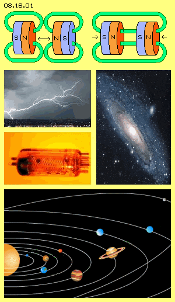
Keine Anziehung
Ein (vermeintlich) augenscheinliches Beispiel von Anziehung stellen Permanentmagnete dar (siehe Bild 08.16.01 oben). Wie ich aber im vorigen Kapitel 08.15. ´Normale und paranormale Erscheinungen´ dargelegt habe, werden ungleichnamige Pole zusammen gedrückt - durch den generellen Ätherdruck auf den gegenüber liegenden Oberflächen (wie es ähnlich auch diverse andere Forscher sehen).
Nach allgemeiner Überzeugung besteht zwischen ungleichnamigen Ladungen eine Anziehungskraft. Blitze aber ´irren´ in den Wolken herum und rasen nicht geradewegs auf die Erde herunter (wie es eine Anziehung verlangen würde) und in einer Röhre werden die Elektronen nicht von der Kathode fort gerissen und zur Anode hin gezogen (wie ich ebenfalls in vorigem Kapitel ausgeführt habe).
Bei Gasen und Flüssigkeiten spielen Sog und Druck eine wesentliche Rolle. Aber wiederum kommt keine Strömung zustande, nur weil ein Bereich relativ geringer Dichte gegeben ist. Der Sog ´saugt´ keine Partikel an, vielmehr werden sie ausschließlich per Druck aus dem benachbarten Bereich höherer Dichte in den relativ freien Raum hinein gestoßen.
Beim Umrühren sammelt sich in der Teetasse das Grobe im Zentrum - aber niemand käme auf die Idee, dass damit die noch weiter außen schwimmenden Teilchen nach innen gezogen würden. Bei jeder Galaxis gibt es im Zentrum eine große Ansammlung von Sternen - und Astronomen berechnen, welche gigantischen Massen dort versammelt sein müssten, um die Sterne der äußeren Spiralarme auf ihrer Bahn zu halten - aber es funktioniert nicht, trotz ´schwarzer Löcher´.
Freier Äther
Nach obiger Definition tritt die Gravitation nur im Übergangsbereich von einem Himmelskörper zum Freiem Äther in Erscheinung. Darum ist zuerst dessen Charakteristik noch einmal zu diskutieren. Das ganze Universum besteht aus Äther, der unaufhörlich in Bewegung ist. Nur ein kleiner Teil davon bildet solche Bewegungsmuster, welche die Erscheinung von Atomen bzw. ´Materie´ in herkömmlichem Sinne bilden. Diese Muster nenne ich ´Gebundenen Äther´. Im Gegensatz dazu bezeichne ich den Rest als Freien Äther, welcher in ´reiner Form´ nur weitab von materiellen Ansammlungen auftritt.
Früher war ich der Meinung, dass der Freie Äther ein ´universelles Bewegungsmuster´ aufweisen müsse, aus welchem sich eine form-gebende Funktion ergibt. Das wurde in den Kapiteln 02.07 ´Global Scaling´ und folgende ausführlich beschrieben, weil mir diese Theorie anfangs einleuchtend erschien (obwohl sie keine saubere Definition des Mediums aufweist). Heute denke ich, dass ´Emergenz´ bzw. eine Tendenz zur Selbst-Organisation anders begründet ist (siehe unten). Freier Äther wird sich also auf ´wirren Spiral-Knäuel-Bahnen´ bewegen, aus folgenden Überlegungen.
Strahlung
Auch weitab von Himmelskörpern ist das ´leere All´ voll Bewegung, z.B. indem pausenlos aus allen Richtungen elektromagnetische Strahlung durch den Raum rast - wie in slow-motion diese Animation grob veranschaulicht. Die ´Photonen´ sind keine Teilchen, sondern eine durch den Äther wandernde Bewegungsstruktur. Im Prinzip ist diese wie ein Korkenzieher mit nur einem Gang (bzw. wie es im Logo meiner Bücher skizziert ist), welcher sich durch den Äther vorwärts ´schraubt´.
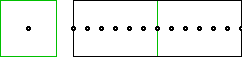
Diese Strahlung entsteht bei rascher Kollision von Atomen, wo aufgrund gegenläufiger Bewegung die Biege-Toleranz des Äthers maximal belastet wird. Bevor es zu einem ´Knick´ in Verbindungslinien kommen kann, wird eine ´Schleife´ seitlich hinaus katapultiert, die mit Lichtgeschwindigkeit davon fliegt. Eine Umdrehung reicht zur Entspannung der Situation.
In der Animation (und in folgendem Bild 08.16.03) ist rechts ein Ausschnitt des Freien Äthers abgegrenzt, durch welchen diese ´Welle´ läuft. Die schwarzen Punkte markieren benachbarte Ätherpunkte, deren Bewegung hier beobachtet wird. Die mittige grüne Linie markiert ein ´Fenster´, das links im Querschnitt dargestellt ist. In der Seitenansicht bewegt sich jeder Ätherpunkt auf- und abwärts. Innerhalb seines Fensters wird er beim Durchgang dieses Photons aus seiner mittigen ´Ruhelage´ ausgelenkt auf einer aus- und wieder eindrehenden Spiralbahn.
Diese Darstellung ist sehr schematisch, z.B. erfordert diese Auf- und Abwärtsbewegung auch eine umlaufende Ausgleichsbewegung, jeweils rechtwinklig zur Richtung der Strahlung (was man die ´magnetische´ Komponente nennt). Wichtig ist hier aber die Feststellung, dass nur diese Bewegungsstruktur vorwärts wandert (die ´elektrische´ Komponente), während aller Äther relativ ortsfest innerhalb seines ´Bewegungs-Fensters´ bleibt.
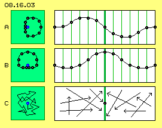
Wichtig ist auch die Feststellung, dass sich der Äther beim Durchgang dieses Photons weder auf perfekten Kreisbahnen noch auf ´schönen´ Sinus-Kurven bewegt. Es ist vielmehr immer ein ´Schlagen´ gegeben, d.h. Bewegung mit zunehmender und abnehmender Geschwindigkeit. Es wird ein Bahnabschnitt relativ schnell und einer relativ langsam durchlaufen. Während einer Hälfte der Zeit wird ein relativ langer und während der anderen ein relativ kurzer Weg durchlaufen (wie aus der Überlagerung zweier Kreisbahnen hier oftmals diskutiert wurde).
In Bild 08.16.03 ist bei A links ein Querschnitt durch das mittige Fenster (dunkelgrün) skizziert und rechts diese Seitenansicht. Bei B ist der gleiche Bewegungsablauf nochmals dargestellt, lediglich aus einer um 90 Grad gedrehten Sicht. In benachbarten Fenstern (hellgrün) finden analoge Bewegungen statt, lediglich zeitversetzt.
Wellen-Salat
In diesem Bild unten bei C sind vorige Wellen nurmehr als Pfeile skizziert. Durch jedes Fenster läuft nicht nur eine Strahlung, sondern zugleich kreuzen sich ´unendlich´ viel Strahlen unterschiedlicher Frequenz, Amplitude und Richtung. Ein beobachteter Ätherpunkt führt also nicht nur obige Schleifenbewegung aus, sondern wird pausenlos hin und her gestoßen. Aus den vielfältigen Überlagerungen ergibt sich ein ´wirrer´ Bahnverlauf, wie bei C ganz links im Fenster schematisch skizziert ist (wobei real alle Bewegungen gekrümmt sind mit fließendem Übergang).
Jede Bewegung eines Ätherpunktes in eine Richtung wird umgelenkt durch eine zweite Wellenbewegung, wird unterbrochen oder zurück gestoßen. Jede ´saubere´ Welle wird praktisch bis zur Unkenntlichkeit deformiert. Es ist eigentlich höchst erstaunlich, dass aus diesem ´verunstalteten´ Wellensalat irgend eine Strahlung irgendwo noch als solche zu erfassen ist.
Mit Hilfsmitteln der Radiotechnik kann allerdings ein Receiver sehr wohl aus dem Wirrwarr des ´Äthers´ durchaus eine bestimmte Sendung heraus filtern. Und auch unser Auge kann aus der Vielzahl elektromagnetischer Wellen durchaus die ´Farbe des Lichtes´ erkennen - auch wenn dessen Photonen schon sehr alt geworden sind auf ihrer Reise durch den (Äther-) Raum. Je nach Fokus des jeweiligen Hilfsmittels können also Informationen aus dem generellen und prinzipiellen Wirrwarr heraus gelesen werden.
Schattenwurf
Außerhalb der Mainstream-Physik ist man sich ziemlich einig, dass Gravitation nie und nimmer eine Anziehungskraft sein kann. Es ist dann auch klar, dass die Schwere nur durch irgendwelchen Andruck zustande kommen kann. Allerdings gibt es sehr viele Ansätze zu deren Erklärung.
Lange Zeit wurde (bzw. wird noch immer) die Vorstellung eines ´Druck-Schattens´ bevorzugt. Danach wird Strahlung durch einen Himmelskörper absorbiert oder abgeschirmt, so dass aus dieser Richtung auf den benachbarten Himmelskörper weniger Strahlungs-Druck fällt. Aufgrund dieser Differenz würden z.B. die Planeten zur Sonne hin gedrückt.
Nun hat aber beispielsweise der Merkur eine extrem exzentrische Bahn. Wenn Merkur sich von der Sonne weg bewegt, wird der Schatten-Sektor kleiner - und ausgerechnet bei seiner größten Entfernung soll der Planet wieder einschwenken zur Sonne hin? Am ´verbeulten´ Magnetfeld der Erde ist zu erkennen, wie stark der Strahlungsdruck aus Richtung Sonne ist - welcher die Abschattung entsprechend reduziert. Jupiter ist ein Gigant unter den Planeten - aber wie minimal ist sein ´Sonnen-Schutz-Schatten´? Zudem wird Licht im Einflussbereich der Sonne gebeugt und natürlich würden dann auch alle Druckwellen um die Sonne herum gelenkt, so dass sich keine wirkliche Abschattung ergibt. So betrachtet ist die Hypothese eines Strahlungs-Schattens mehr als fraglich.
Gravitationswellen
Zur Erklärung der Schwerkraft werden momentan spezielle ´Gravitations-Wellen´ bevorzugt. Irgendwo im Universum explodiert immer ein Stern und die Bilder zeigen deutlich, wie Materie in alle Richtungen davon fliegt. Es müssen gewaltige Druckwellen durch das Universum rasen, die auch aus allen Richtungen praktisch pausenlos auf der Erde eintreffen.
Fraglich ist allerdings bei diesen Theorien, durch welches Medium hindurch die Druckwelle so weite Wege gehen soll. Meistens wird die notwendige Klärung dieser Voraussetzung ignoriert oder man unterstellt gar, dass sich Kräfte auch durch den absolut leeren Raum fortpflanzen könnten. Viele Theorien unterstellen ein irgendwie elastisches oder ein teilchenhaftes Medium, weil es nur dort eine verdichtete Druck-Front und nachfolgend einen Bereich geringerer Dichte geben kann.
Ich gebe zu bedenken, was sich aus den vielen kreuzenden Druckwellen unter diesen Voraussetzungen ergeben würde. Die Druckwellen schneiden sich nicht nur in einer Ebene (wie die Pfeile in obigem Bild rechts bei C), sondern aus allen Richtungen des Raumes. Bei allen Gasen (also einem teilchenhaften Medium) findet augenblicklich ein Dichte-Ausgleich statt. Auch bei einem elastischen Medium (wie immer geartet) treten unabdingbar Reibungsverluste auf. Das Signal (bzw. hier jede Druckwelle) würde nach kurzer Distanz ´verschmieren´, z.B. weil die Druckfront seitlich in zufällig dort existierende geringere Dichte hinein fallen wird und damit verpufft.
Es werden auch immer wieder ´stehende Wellen´ diskutiert. Die gibt es sehr wohl - aber nur, wenn sie exakt gespiegelt werden. Im dreidimensionalen, offenen Raum sind permanent stehende Wellen schlicht und einfach nicht möglich. Gerade aus diesen Gesichtpunkten ergibt sich zwingend, dass Äther eine einzige lückenlose Substanz sein muss - weil nur damit trotz allem Wirrwarr an Überlagerungen letztlich kein einziges Signal verloren gehen kann.
Eisberge im Whirlpool
Obige Diskussion universum-weiter Druckwellen und des Schattenwurfes der Sonne lenkt etwas ab vom ursprünglichen Problem: warum Newton der Apfel auf den Kopf fiel. Er erkannte die Gesetzmäßigkeit der gravitativen Beschleunigung des Fallens zur Erde hin, wollte diese Kraft aber niemals aus Anziehung verstanden wissen. Unglücklicherweise wurde dieser Bewegungsprozess auf das Fallen der Planeten um die Sonne übertragen und die wirksame Kraft ´selbstverständlich´ als Anziehung unterstellt. Zielführender wäre gewesen zu überlegen, warum Eisberge zwischen Grönland und Kanada nach Süden fallen oder gezogen werden.
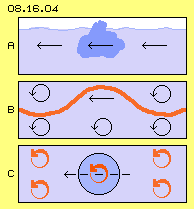
Eisberge sind rein passiv, sie treiben schlicht und einfach mit der Meeresströmung (siehe Bild 08.16.04 bei A, hellblau das Meer, dunkelblau der Eisberg). Sowohl das Meer wie der Eisberg bestehen aus H2O, wobei im flüssigen Wasser nur wenige Bereiche eine andere Struktur aufweisen und als ´feste´ Materie des Eises erscheinen. Genauso ist es im Sonnensystem: überall nichts als Äther, nur an wenigen Stellen weisen seine Bewegungen eine speziell geordnete Struktur auf, die als Atome in Erscheinung treten und lokal große Ansammlungen in Form von Himmelskörpern bilden. Im riesigen Whirlpool der Ekliptik driften diese um die Sonne herum - und brauchen so wenig Schub- oder Zugkraft wie obiger Eisberg bei seiner Reise nach Süden.
Schub durch Schlag
Allerdings gibt es einen wesentlichen Unterschied bei diesem Vergleich: Äther ist prinzipiell ortsfest und es gibt real keine Äther-Strömung. Der Äther ist immer nur schwingend auf mehr oder weniger geordneten Bahnen. Freier Äther bewegt sich chaotisch auf sehr kurzen Bahnabschnitten. In diesem Bild bei B ist der Freie Äther hellblau gezeichnet und seine insgesamt neutralen Bewegungen sind als Kreise mit Pfeil symbolisiert. Bei obigem Beispiel der Strahlung wird dem Äther zeitweilig die spiralige Bewegung des Photons aufgeprägt, wenn diese Welle (rot) durch den Äther rast.
Der Whirlpool der Ekliptik besteht auch aus Freiem Äther, allerdings erfolgen die Bewegungen mit vertauschten Rollen. Bei C repräsentiert der dunkelblaue Kreis ein Atom, das nur in sich schwingend ist. Nach außen ist es neutral und hängt frei schwebend im Raum (analog zum passiven Eisberg). Die Erscheinung einer ´Strömung´ ergibt sich nur daraus, dass hier der Äther nicht neutral ist, sondern Bewegungen mit Schlag aufweist, wie hier durch die Kreise mit dickem rotem Pfeil symbolisiert ist.
Dieses Schlagen ist im Drehsinn der Ekliptik gerichtet, überall weist der Äther diese Bewegung auf und allen materiellen Partikeln wird damit diese Bewegungskomponente aufgeprägt. Dieses Schlagen verläuft schnell und weit vorwärts während einer Halbzeit und in der anderen langsam zurück. Mit jedem Schlagen wird die Bewegungsstruktur jeden Atoms etwas nach vorn versetzt (siehe unten bzw. ausführlich erläutert in den Kapiteln 08.08. ´Bahnen mit Schlag´ und folgende).
Wenn obige Meeres-Strömung mit einem Förderband zu vergleichen ist, wäre der Whirlpool der Ekliptik mit einem Rüttelband zu vergleichen. Alle Planeten werden permanent nach vorn geschubst, immer im Kreis herum, obwohl aller Äther im Prinzip ortsfest bleibt, nur die Strukturen der materiellen Bewegungsmuster wandern durch den Raum.
Die Planeten kreisen also um die Sonne, ohne dass vermeintliche Gravitations-Kräfte notwendig wären. Das ganze Sonnensystem dreht um das galaktische Zentrum, wobei es wiederum nur in einem Randwirbel der Milchstrasse innerhalb ortsfesten Äthers driftet. Im Raum vorwärts geschoben werden alle Atome immer nur durch das spezielle ´Schlagen´ des Äthers im jeweiligen Bereich. Auch die ganze Galaxis wird nicht per Anziehungskraft zusammen gehalten. Im galaktischen Zentrum muss darum nicht die Masse (in Form schwarzer Löcher) vorhanden sein, wie sie sich aufgrund ´universeller Gravitations-Konstante´ rechnerisch ergibt. Wohl aber bedarf es einer lokal wirksamen Gravitationskraft - damit ein Apfel vom Baum fällt.
Gebundener Äther
Ein Apfel besteht aus Atomen und diese sind ´Gebundener Äther´. Im Gegensatz zum Freien Äther mit seinen kleinräumigen, chaotischen Bewegungen sind das Bereiche mit geordneten und weiträumigeren Bewegungen. Alle Bewegungen erfolgen mit gleicher Absolutgeschwindigkeit (mindestens mit Lichtgeschwindigkeit), nur eben auf engen oder weiteren Bahnen. In Bild 08.16.05 ist oben bei A ein solch ´aufgeblähter´ Bereich skizziert. Links und rechts befinden sich Ätherpunkte (blau) des Freien Äthers. Innerhalb des grünen Bereiches sind beispielsweise zwei Ätherpunkte (schwarz) eingezeichnet und die gekrümmte Verbindungslinie markiert benachbarte Punkte.
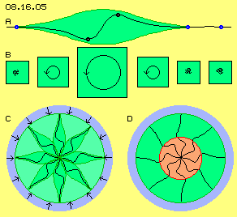
Bei B sind als Querschnitte wiederum ´Fenster´ (grün) eingezeichnet, innerhalb denen die jeweiligen Bewegungen schematisch skizziert sind. Links und rechts bewegt sich Äther auf diesen engen ´Spiralknäuelbahnen´. Ganz rechts ist skizziert, dass bei allem Chaos die Bahnen benachbarter Ätherpunkte auch des Freien Äthers nur graduelle Unterschiede aufweisen dürfen.
Zur Mitte hin werden die Bewegungen ruhiger auf weiter gestreckten Bahnen, hier repräsentiert durch Kreise mit Pfeil. Oder umgekehrt betrachtet: jede weiträumige Bewegung erfordert Ausgleichsbereiche, in welchen die Bewegungsradien graduell reduziert werden bis auf die engen Bewegungen des Freien Äthers. Wenn sich der Freie Äther momentan in die gleiche Richtung wie der Gebundene bewegt, wird dessen Schwingen verstärkt. Während dessen weites Schwingen weiter läuft, wird der Freie Äther sich schon wieder gegenläufig bewegen. Daraus resultiert der generelle Ätherdruck auf alles grob Schwingende.
Die hier bei A skizzierte ´Doppelkurbel´ ist beispielsweise das Bewegungsmusters eines Elektrons. Parallel nebeneinander können viele gleichartige Schwingungen verlaufen, wie z.B. als Bewegungsmuster einer elektrischen Ladungsschicht oder in Form ´ätherischer Wände´ (wie in vorigen Kapiteln detailliert dargestellt wurde). Mehrere solcher Doppelkurbeln können auch radial zueinander stehen, womit sich die Bewegungsmuster der Atome ergeben, wie in Kapitel 08.13. ´Äther-Modell der Atome´ ausführlich beschrieben wurde.
Bei C ist schematisch ein Querschnitt durch ein Atom skizziert, wo in dieser Ebene acht der obigen Doppelkurbeln (dunkelgrün) radial angeordnet sind. Jeweils eingezeichnet ist auch die schwarze Kurve benachbarter Ätherpunkte. Der umgebende Freie Äther (blau) übt allseitig Druck (siehe Pfeile) auf diese weitläufig schwingende Einheit aus. Wie Federn werden die Verbindungslinien dabei nach innen geschoben. Im Zentrum treffen sich alle Verbindungslinien, so dass dieser Schub zu einer Ausweitung der Schwingungs-Amplituden führt. In der Kugel ist aber der Raum begrenzt und zudem können die Verbindungslinien nur bis zu einem Maximum auf Biegung beansprucht werden. Es stellt sich ein Gleichgewicht ein bei einem Volumen, das für alle Atome nahezu gleich groß ist. Daraus resultiert auch, dass nur etwa hundert Bewegungsmuster die stabilen chemischen Elemente bilden können.
Bei D ist dieses Atom noch einmal abgebildet mit den Verbindungslinien. Diese treffen sich im Zentrum, wo alle Bewegungen synchron auf engem Raum verlaufen müssen. Obwohl überall nur der gleiche Äther vorhanden ist, erscheint dieser Kern (rot) ´hart´ - ohne dass real jemals irgendwo ein Elementar- oder Subelementar-Teilchen vorhanden wäre. Es gibt nur diesen inneren Kern-Bereich (rot) mit ´maximaler Verspannung´ unter allen benachbarten Ätherpunkten und nach außen hin in alle Richtungen eine ´Aura´ (grün) ausgleichender Bewegungen zum Freien Äther (blau) hin.
Frei oder im Verbund
In Bild 08.16.06 ´schwimmen´ diverse Atome (mit rotem Kern und grüner Aura) im Freien Äther (hellblau). Diese Gebilde können ein-atomig sein (wie bei A) oder zwei gleiche Atome können mit ihren Oberflächen aneinander ´kleben´, um z.B. H2 zu bilden (bei B). Diese Erscheinung ist relativ häufig, weil sich die Atome gegenseitig nun wirklichen Druck-Schatten bieten. Nur die Edel-Gase sind so ´rund´, dass sie gar keine Flächen zum gegenseitigen Anlagern aufweisen.
Der Druckschatten-Effekt ist auch bei größeren Ansammlungen von Atomen noch zu messen, z.B. zwischen Stahlkugeln mittels empfindlicher Torsions-Waagen oder zwischen planen Platten ist er als ´Casimir-Kraft´ gegeben. Es ist aber noch immer keinerlei ´Anziehungskraft´, sondern nur das Resultat des allgemeinen Ätherdruckes.
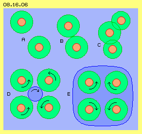
Normalerweise sind Atome nicht perfekt symmetrisch, vielmehr bilden ihre Aura-Oberflächen Hügel und Täler - und wenn diese zueinander passen, werden Atome zu Molekülen zusammen gedrückt und bilden beispielsweise H2O (bei C). Je nach Pass-Genauigkeit sind diese Verbindungen unterschiedlich stabil. Daraus kann man ermessen, wie stark dieser generelle Ätherdruck tatsächlich ist: bei jedem Atom entsprechend der ´starken Kernkraft´, bei den Molekülen entsprechend ihrer ´Bindungs-Kräfte´.
Atome und Moleküle können weitere Ansammlungen von unterschiedlicher Festigkeit bilden, wobei die Bewegung des Äthers zwischen den beteiligten Partikeln von Bedeutung ist. Bei D sind z.B. vier Atome gleicher Bewegungsform skizziert, hier stark vereinfacht durch gleichsinniges Schwingen (linksdrehend) auf einer Kreisbahn repräsentiert. Im Zentrum ergibt sich damit eine gegenläufige Bewegung (rechtsdrehend), praktisch wie wenn Zahnräder ineinander greifen würden.
Allerdings ist die Bewegung zwischen den Atomen gegenläufig (siehe Pfeile der beiden unteren Atome). Solche divergierenden Bewegungen erfordern Abstand, der z.B. gegeben ist, wenn die Atome auf unterschiedlichen Ebenen angeordnet sind. Dann ist die mittige Ätherbewegung rechtsdrehend wie eine Wendeltreppe - und das ist der ´magnetische Fluss´ in Eisen oder Permanentmagneten. Diese Drallbewegung ist so stabil und stark, dass sie am Nordpol des Magneten in den Raum hinaus weiter wirkt und schon außerhalb des Südpols den Freien Äther in diese Bewegungsform ´zieht´ (rechtsdrehend mit Blick auf den Südpol).
Obige Moleküle oder auch alle lose Verbindungen bilden eine gemeinsame Aura, auf deren Oberfläche dann der äußere generelle Ätherdruck wirkt und den Verbund zusammen hält. Besonders hart ist der Verbund bei Kristallen, wo der Äther zwischen den Partikeln ein passendes Bewegungsmuster ausbilden kann.
In diesem Bild bei E sind schematisch wieder vier Atome gezeichnet, deren gleichartige Oberflächenstruktur wiederum durch Pfeile repräsentiert sein soll. Sie sind hier z.B. wechselweise angeordnet (ihre ´Pole´ um 180 Grad versetzt), so dass sie abwechselnd links- und rechts-drehend erscheinen. Sowohl im Innenraum als auch außen herum ergeben sich symmetrische Bewegungen, so dass sich alle Bewegungen gegenseitig unterstützen (dunkelblau markierter Bereich). Diese Skizze stellt nur das grobe Prinzip einer gemeinsamen Aura und adäquat geordneter Bewegungen im Innern dar. Real sind vielfältige Anordnungen möglich und daraus ergeben sich jeweils die besonderen Eigenschaften von Kristallen.
Ortsfest schweben oder im Raum driften
Die Wirbelsysteme materieller Erscheinungen können ortsfest im Raum schweben oder sie wandern nach einer mechanischen Krafteinwirkung im Raum vorwärts. Die Begriffe von Masse und Schwere, Trägheit ruhender und bewegter Masse bzw. kinetischer Energie wurden im Kapitel 08.13. bei der Beschreibung der Atome behandelt, z.B. dort bei Bild 08.13.08 (Ausschnitte davon sind hier in Bild 08.16.07 rechts noch einmal wiederholt). Hier soll noch einmal verdeutlicht werden, wie die ´schlagenden Bewegungskomponenten´ des Freien Äthers die Atome im Raum vorwärts treiben.
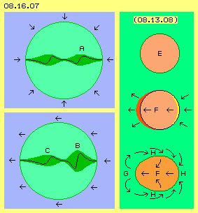
Links in diesem Bild schwebt ein Atom A (hellgrün) frei im umgebenden Äther (hellblau). Durch den allgemeinen Ätherdruck (siehe Pfeile) wird diese Bewegungsstruktur zusammen gehalten. Eingezeichnet ist hier nur eine quer durchlaufende Verbindungslinie, die zwei ´Doppelkurbeln´ bildet. Die zentralen Bereiche bilden den Kern und die äußeren Ausgleichsbereiche die Aura (wie oben bei Bild 08.16.05 diskutiert).
Das ganze Sonnensystem wandert mit mehr als 200 km je Sekunde um das galaktische Zentrum und die Planeten drehen mit einigen Kilometern je Sekunde um die Sonne. Aller Äther aber ist prinzipiell ortsfest. Der Freie Äther ´zittert´ nur auf engem Raum. Diese Bewegung resultiert aus Strahlungen, d.h. sie wird ebenfalls in etwa Lichtgeschwindigkeit aufweisen (wogegen die Geschwindigkeiten materieller Bewegungen fast unbedeutend langsam sind).
In der Galaxis und im Sonnensystem (und auch in der Umgebung von Himmelskörpern) ist das Schwingen des Freien Äthers nicht total symmetrisch und neutral, sondern weist eine schlagende Komponente auf (die sich zwangsweise ergibt, wenn sich nur zwei Kreisbewegungen überlagern). Im Sonnensystem ist dieses Schlagen eine weiträumige Erscheinung, überall im Drehsinn der Ekliptik, wie z.B. in diesem Bild unten links durch die Pfeile angezeigt ist.
Alle Atome erfahren damit zeitweilig, aber fortgesetzt auf der einen Seite (rechts) einen verstärkten und auf der anderen Seite (links) einen reduzierten Ätherdruck. Die ´luv-seitige´ Aura (bei B) wird dabei etwas komprimiert, während der lee-seitige Ausgleichsbereich (bei C) entlastet wird. Die Verbindungslinien verformen sich dabei wie Stahlfedern (hier extrem überzeichnet), womit der Druck quer durch den Atomkern nach vorn weiter gereicht wird.
Nur die Art des Schwingens wird verlagert
Wir sind total auf materielle Teilchen fixiert: das Blaue interpretieren wir spontan als Wasser und das Grüne z.B. als Treibholz. Real aber ist alles nur Äther und der einzige Unterschied zwischen dem blauen und grünen Bereich ist die Art der schwingenden Bewegungen: außen chaotisch auf engen Bahnen, innen besser geordnet und auf weiteren Bahnen. In der Aura sind die Radien zunächst zunehmend, dann aber wieder abnehmend, weil sich alle Bewegungen im Kern auf engem Raum treffen, wobei alle Abläufe synchron erfolgen.
Der Freie Äther ´bekämpft´ das weiträumige Schwingen, kann aber das Atom nur auf ein bestimmtes Volumen komprimieren. Gerade vom Kern her ist der Bewegungsspielraum begrenzt. Von dort geht also ein Gegendruck aus, so dass alle ´Feder-Spannung´ überall gleichwertig ist. Diese Federn sind hier in Form gekrümmter Verbindungslinien gezeichnet, die aber nur den realen Umfang des dortigen Schwingens repräsentieren.
Der verstärkte Druck des Freien Äthers schiebt keine ´Materie´ vorwärts, noch nicht einmal der Äther verlagert sich an einen anderen Ort - nur der Umfang des Schwingens, nur die Struktur dieses Bewegungsmusters wird etwas zur Seite verschoben: hier wird der Äther links vom Atom zunehmend auf weiteren Bahnen schwingen und der Äther der rechten Hälfte des Atoms wird zunehmend zurück gefahren auf kleinräumiges Schwingen.
Wie gesagt: alle Atome der Erde rasen durch das All. Ihr Bewegungsmuster verlagert sich aber nur tausend mal langsamer als Äther sich originär bewegt. Die Erde rotiert um die Sonne noch fünfzig mal langsamer und alle Bewegungen auf der Erde sind millionenfach langsamer. Dieses Verschieben der materiellen Wirbelstrukturen ist also minimal in Relation zur Geschwindigkeit des chaotischen ´Zitterns´ des umgebenden Äthers wie des geordneten Schwingens in den Atomen.
Das ´Schlagen´ asymmetrischer Bewegung im Bereich Freien Äthers bewirkt also, dass Materie (mit verschwindend kleinen Geschwindigkeiten) durch den Raum driftet - und nochmals: es fliegen keine festen Teilchen umher, sondern nur die Art des Schwingens im prinzipiell ortsfesten Äther verlagert sich dabei geringfügig. Das ist also der ´Antrieb´ für die Bewegung der Planeten mitsamt ihrer Sonne - ohne alle ´masse-inhärente Anziehungskräfte´. Der Antrieb für das Fallen eines Apfels auf die Erde erfolgt ebenso wenig durch Anziehung, wohl aber analog zu vorigem Schub-Effekt.
Reiner und stürmischer Äther
Gebundener Äther stellt geordnetes, weiträumiges Schwingen dar, wobei Materie nur in den etwa hundert Varianten der chemischen Elemente auftritt. Vom einzelnen Atom über Moleküle und lose Verbindungen kann sich Materie zu gigantischen Ansammlungen zusammen fügen, z.B. Planeten, Sterne und Galaxien bilden.
Alle Materie besteht aus Äther und natürlich auch die Zwischenräume. Dieser Freie Äther schwingt auf engen Bahnen, die sich aus vielfältigen Überlagerungen ergeben. Diese ´Spiralknäuelbahnen´ sind ziemlich ´unordentliche´ Bewegungsmuster, aber nicht überall gleichermaßen ´chaotisch´. In Bild 08.16.08 sind einige Bereiche aufgelistet, nach denen man die vorwiegende Struktur des Freien Äthers differenzieren könnte.
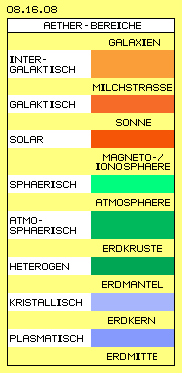
Weit draußen im Raum, fernab von Galaxien, wird Freier Äther in ´reiner´ Form gegeben sein, weil die Staubpartikel in den unendlichen Weiten viel Strahlung heraus gefiltert haben. In diesem intergalaktische Bereich (hellrot) wird also relativ ´weicher´ Äther vorhanden sein.
Ganz anders ist der Äther z.B. innerhalb unserer Milchstrasse beschaffen. In dieser Galaxis (mittelrot) sind im Zentrum viele Sterne versammelt, die sich mit ihrer Strahlung gegenseitig ´bombardieren´. Nach außen gibt es ruhigere Zonen, unterbrochen von turbulenten Bereichen der Spiralarme. Das Schwingen des Freien Äthers ist also innerhalb einer Galaxis lokal sehr unterschiedlich, jeweils resultierend aus der Überlagerung aller hindurch eilender Strahlung. Überall aber ist zudem dieses asymmetrische Schlagen im Drehsinn der Galaxis gegeben, wiederum nicht gleichförmig, sondern z.B. eingerollt in Randwirbeln (und in einem wirbelt unser Sonnensystem spiralig vorwärts).
Wir befinden uns im Nahbereiche der Sonne und kennen deren tobende Oberfläche. Aus diesem ´Hexenkessel´ rasen Strahlung und sogar materielle Partikel in das solare Umfeld (dunkelrot) hinaus. Dieser ´Sonnenwind´ ist z.B. anschaulich zu erkennen an der Ablenkung mancher Teile eines Kometen-Schweifes. In vorigem Kapitel wurde beschrieben, wie diese Turbulenzen sich zu gigantischen Röhren organisieren. Dort zeigt z.B. die Graphik 08.15.03 wie dieser Sturm weitgehend um die Erde herum gelenkt wird.
Beschützte Sphäre
Im lückenlos zusammen hängenden Äther gibt es keine Grenzen und alle Kräfte wirken theoretisch unendlich weit. Der Erdmagnetismus ist z.B. ein ziemlich schwaches ´Feld´ spezieller Ätherbewegung, reicht aber dennoch weit in den Raum hinaus. Ebenfalls im vorigen Kapitel wurde beschrieben, wie durch flächige Bewegungsmuster sogar ´ätherische Wände´ zustande kommen. Diese (auch mehrschichtigen) Hüllen bilden eine Zone bzw. ´Innen-Welt´, die vor äußeren Einflüssen geschützt ist.
Eine solche ätherische Membrane umgibt die Erde in Form der Magnetosphäre. Das Erd-Magnetfeld wird außen durch den Sonnenwind zu einer ´massiven Front´ zusammen gedrückt (Magnetopause). Die Erde generiert dieses Magnetfeld, d.h. ihre Aura reicht zumindest bis zu dieser Schutzhülle hinaus. An dieser Hülle wird harte Strahlung absorbiert, reflektiert oder umgelenkt. Auch weiter nach innen hat die Ionosphäre nochmals eine solche Filter-Funktion.
Der Äther dieser Schichten ´magnetischer Wirbel´ oder ´elektrischer Raumladung´ ist natürlich in sehr heftiger Bewegung. Aber innerhalb dieser Membranen ist der Äther befreit von harter Strahlung und es existiert damit eine Sphäre (hellgrün) von sehr viel ´ruhigerem´ Äther. Kurz innerhalb dieser ´irdischen Außengrenze´ ist der Äther damit fast so rein wie der Freie Äther weit außerhalb von Galaxien. Erst durch diese ätherische Hülle wird die Erde zu einem ´Raumschiff´ mit einer eigenständigen Innenwelt - und wie bekannt ist, konnte sich nur innerhalb dieser beschützten Zone das Leben auf dem Planeten entwickeln.
Zunehmend grober Äther
Von dieser Schutzhülle einwärts wird die Struktur des Freien Äthers durch andere Faktoren bestimmt. Normalerweise dominiert aller Freier Äther die (wenigen) lokalen Bereiche des Gebundenen Äthers: er drückt die Atome zur Kugelform, schiebt mehrere davon aufgrund allgemeinen Drucks zusammen und durch asymmetrisches Schlagen schiebt er auch diese Bewegungsmuster durch den Raum. Aber umgekehrt gilt auch, dass die Ansammlung materieller Wirbelkomplexe den umgebenden Äther beeinflusst.
Im Bereich der Atmosphäre gibt es vermehrt Gaspartikel und die Dichte der Luft nimmt zur Erde hin zu. Die Partikel halten Abstand zueinander, fliegen unermüdlich kreuz und quer durch den Raum mit vielen Kollisionen untereinander. Jedes Atom hat eine weit nach außen reichende Aura, in dessen Ausgleichsbereichen die Bewegungen auf das enge Schwingen des Freien Äthers reduziert werden. Je enger aber die Zwischenräume werden, desto weniger werden die Bewegungen komplett reduziert. In diesem atmosphärischen Bereich (mittelgrün) wird der Freie Äther zwischen den Atomen also auch auf etwas weiteren Bahnen schwingen, d.h. graduell gröbere Form annehmen. Da alle Bewegung im Äther zusammen hängend ist, wird dieses breitere Schwingen in der Atmosphäre graduell auch nach außen hin übertragen.
Zumal es nach unten noch vielmals ´gröber´ wird: an der Erdoberfläche wird die Ansammlung von Materie wesentlich dichter, es gibt nun Atome diverser chemischer Elemente, ihre Ansammlungen sind variantenreicher, es gibt Gebirge und Ozeane, Wüsten und Wälder, Hitze und Kälte, Stürme - eben die vom Grobstofflichen dominierte Welt. Damit wird auch der Freie Äther besonders zur Erdoberfläche hin sehr viel mehr die Struktur von ´Grobstofflichem´ annehmen. Insgesamt weist damit der Freie Äther von den ´sphärischen´ Bereichen zur Erde hin zunehmend gröbere bzw. weiträumigere Bewegungsmuster auf.
Die Erdkruste stellt ein Gemenge unterschiedlichen Gesteins dar, bestehend aus Material unterschiedlicher Dichte und Körnung. Die gemeinsame Aura um alle Moleküle oder Partikel bzw. ganzer Gesteinsbrocken ist unterschiedlich und so wird auch der Freie Äther im Bereich dieser Felsen sehr heterogen sein (in obigem Bild dunkelgrün markiert).
Gegenüber dem Freien Äther an und über der Erdoberfläche unterscheidet sich die Struktur dort unten aber in einem wesentlichen Punkt: alle Strahlung ist bald heraus gefiltert. Das enge Schwingen aufgrund vielfältig überlagerter Strahlung ist nicht mehr gegeben. Die Struktur des Äthers zwischen den Gesteins-Partikeln kann sich damit zunehmend an deren Bewegungsmuster anpassen. Der Aufbau der Erde wird damit nicht nur durch die ´Materie´ bestimmt, vielmehr hat der Freie Äther in den Räumen zwischen den Atomen einen wesentlichen Einfluss.
Zunehmende Angleichung und Umwandlung
Es ergeben sich nun wieder ganz andere Kriterien für die Bewegungsformen des Freien Äthers. Bereits in der Erdkruste oder spätestens in den Regionen, die als Erdmantel bezeichnet werden, geht das Material zunehmend in kristalline Formen über. Wie bei Bild 08.16.06 bei E skizziert wurde, bilden die Atome bzw. Moleküle nun so wohl geordnete Strukturen, dass der Äther in den Zwischenräumen (und in der gemeinsamen Aura) ebenso geordnete Bewegungsmuster bildet. Dieser Äther-Bereich ist in obigem Bild als ´kristallisch´ (hellblau) gekennzeichnet.
In vorigem Kapitel wurde anhand einer Druse aufgezeigt, dass dabei ´Emergenz´ bzw. eine Tendenz zur Selbst-Organisation aufkommt: die Kristalle bilden in und um sich eine Äther-Struktur, welche ihrerseits zum Anwachsen der Kristalle führt - selbst wenn keine entsprechenden chemischen Elemente vorhanden sind. Der dortige Äther wird ´automatisch´ in solche Bewegungsformen überführt, so dass er genau zu diesem Muster passend ist - und damit z.B. diese SiO2-Formationen bildet.
So unglaublich es manchen erscheinen mag: es gibt die Umformung chemischer Elemente. Es gibt z.B. Lagerstätten von Kohle in Erguss-Gestein, wo niemals organisches Material vorhanden sein konnte (und darum wird ernsthaft diskutiert, dass und wie Kohle sich rein an-organisch bildet). Es ist z.B. gängige Auffassung, dass schwere Atome sich nur bei der Explosion von Sternen bilden können (aber dann müssten diese Atome überall im Weltall auch als Staub verstreut sein). Chemische Umwandlung setzt keinesfalls großen Druck oder Hitze voraus, aber oftmals ist ein geeigneter Katalysator erforderlich. Dieser geht meist nicht direkt ein in die chemische Umwandlung, nur seine Anwesenheit ist erforderlich. Seine Aura bildet ein Äther-Umfeld, innerhalb dessen die chemischen Elemente reagieren.
Es ist also durchaus denkbar, dass auch schwere chemische Elemente im Erdinnern gebildet werden. Je nach vorherrschender Struktur des dortigen Äthers (in bestehenden Atomen und/oder im Umfeld) können sich vielerlei Elemente ansammeln. Unbestritten ist z.B., dass Gestein auch noch in großer Tiefe ´entgast´ und Wasserstoff ´generiert´ wird (der in solchen Mengen im originären Gestein einfach nicht vorhanden sein konnte). Zusammen mit Sauerstoff wird immer neues Wasser gebildet (während ´altes´ Oberflächen-Wasser aufgrund des Druckes im Gestein niemals so tief absinken könnte). Andererseits bilden sich dort unten Kohlenwasserstoffe (obwohl niemals so viel C dort hinunter gekommen sein konnte).
Plasma im Erdkern
Nach gängiger Auffassung befindet sich im Erdkern glut-flüssiges Eisen oder es ist gar im Aggregatzustand eines Plasmas (so wie aufgrund enormen Drucks und extremer Temperatur der Kern eines Sterns aus Helium-Plasma bestehen soll). Aus Sicht des lückenlosen Äthers kann im Kern von Himmelskörpern aber weder hoher Druck noch Hitze existieren - wohl aber ein Plasma mit fließendem Übergang von Freiem Äther und Atomen.
Schon in der Erdkruste werden alle Strahlungen heraus gefiltert und im Bereich kristalliner Formationen entspricht der Freie Äther immer mehr dem Bewegungsmuster der dortigen Atome. Dieser Prozess setzt sich weiter einwärts fort und geht über in einen Bereich ´plasmatischen´ Äthers (in obigem Bild dunkelblau markiert). Die Grenzen zwischen dem Bewegungsmuster der Atome und dem umgebenden Äther ´verschwimmen´, d.h. es ergeben sich zunehmend Bewegungen wie in einem Plasma, als eine durchgängig ´schwappende´ Masse.
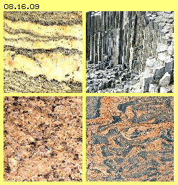
Je mehr der Freie Äther den Bewegungen in der Aura der Atome entspricht, desto weniger Druck übt er auf diese aus. Ich möchte an die Experimente zum ´Bose-Einstein-Kondensat´ erinnern (siehe auch unten in Kapitel 04.02. ´Raum-Zeit-Quanten-Zero-Point-Energie´): durch extrem tiefe Temperaturen werden die Bewegungen von Atomen so weit als möglich herunter gefahren und damit äußere Einflüsse reduziert. Es ergeben sich Plasma-Gebilde großen Volumens, tausend- und sogar millionenfach über den Umfang der beteiligten Atome hinaus. Per Laser kann man diese ´Suppe umrühren´ - also könnten sich je nach Umgebungs-Bedingungen auch neue Elemente bilden (wie u.a. auch Experimente zur ´cold-fusion´ belegen).
Zusammenfassend kann festgestellt werden: der Freie Äther außerhalb der irdischen Sphäre ist ein Bereich voller Hektik und pausenlos wechselnden Bewegungsrichtungen aufgrund überlagerter Strahlungen. Die harte Strahlung wird durch die Schutzmembranen der Magneto- und Ionen-Sphären heraus gefiltert. Übrig bleibt ein sehr viel ´ruhigerer´ Freier Äther, der zur Erdoberfläche hin zunehmend die Bewegungsmuster der Materie übernimmt. Weiter einwärts passen sich Freier Äther und materielle Äther-Wirbel immer mehr an, bis sich im Kern ein relativ undifferenziertes Plasma ergibt - ohne Druck und Temperatur extremen Ausmaßes.
Druck und Temperatur der Erde
Allerdings muss es in der Erde ziemlich heiß sein, sonst könnte es keine Vulkane oder aufgeschmolzenes Gestein geben, wie die Basalt-Säulen, Quarz-Bänder oder Granit in vielfältigen Formen eindrucksvoll belegen (siehe Bild 08.16.09).
Das folgende Bild 08.16.10 zeigt links einen Schnitt durch die wesentlichen Erdschichten. Die äußerste Schicht der Erdkruste wird mit etwa 35 km angenommen. Allerdings konnte man bislang nur 14 km tief bohren, wo hoher Druck und Temperaturen von 300 Grad das weitere Vordringen bislang verhindert haben. Der obere Erdmantel wird mit rund 400 km Tiefe angegeben. Bis dort reicht auch die Lithosphäre, also der Bereich ´normalen´ Gesteins. Dort müssen zumindest lokal Temperaturen bis rund 1500 Grad herrschen (dem Schmelzpunkt von Quarz), so dass Magma und Erguss-Gestein noch mit 700 bis 1200 Grad zur Erdoberfläche kommen können (allerdings ist der Schmelzpunkt von Gestein je nach Druck und Gemenge höchst unterschiedlich).
Es gibt dann eine relativ scharf abgegrenzte Übergangszone, bei welcher die Struktur des Gesteins stark verändert sein muss (was oben als Ergebnis des ´kristallischen´ Äthers bezeichnet wurde). Der untere Mantel reicht 2900 km tief und die Temperatur soll dort bei 2000 Grad liegen. Im äußeren Kern würde bei 2900 Grad alles flüssig sein bis zu einer Tiefe von 5100 km. Der innere Kern soll sogar bis zu 5000 Grad heiß sein, bei einem Druck von einigen Millionen bar.
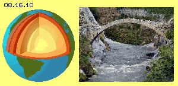
Wie gesagt, genaue Kenntnis hat man nur bis maximal 14 km Tiefe. Darüber hinaus kann man Rückschlüsse aufgrund der Laufzeiten und -wege von Druckwellen bei Erdbeben ziehen. Im übrigen aber basiert alles auf der Annahme einer universumweit gültigen Gravitationskonstante, wo Anziehungs- und Fliehkräfte übereinstimmen müssen aufgrund der Radien und Umlaufgeschwindigkeiten, letztlich über das Volumen auch die Dichte von Himmelskörpern errechnet wird - wozu z.B. ein gewichtiger Eisen-Nickel-Kern im Zentrum der Erde ´gebraucht´ wird - als rein fiktive Schlussfolgerung (und analog dazu bei allen Himmelskörpern).
Tatsächlich ist völlig ungeklärt, wie die Temperatur für obige Gesteinsschmelzen zustande kommen könnte. Egal ob nach herkömmlich unterstellter Anziehungskraft oder ob man eine von außen wirkende Andruckskraft unterstellt: letztlich wirken beide Kräfte statisch. Diese ergeben Druck, aber aus Druck resultiert kein Anstieg der Temperatur. Obiger schwere Hammer und leichte Feder werden beim freien Fallen gleich schnell beschleunigt. Erst auf der Erdoberfläche (bzw. fester Unterlage) weisen beide aufgrund unterschiedlicher Dichte und Masse (der ´Sperrigkeit´ ihrer Wirbelmuster) unterschiedliches Gewicht auf. Auf einer Balkenwaage lasten beide statisch - und die fortgesetzte Einwirkung der Gravitation verändert die Temperatur dieser Atome keinesfalls.
Wärme ist ein Ausdruck der Geschwindigkeit molekularer Bewegung. Wenn Gas in einem Zylinder durch einen schnell bewegten Kolben komprimiert wird, dann wird dessen kinetische Energie übertragen auf die Geschwindigkeit der Gaspartikel, d.h. die Partikel bewegen sich schneller im Raum und das Gas wird wärmer. Wenn das Volumen aber langsam verkleinert wird, steigt zwar der Druck entsprechend, aber die Temperatur des Gases bleibt unverändert (isotherm). Genauso wenig erhöht sich die Geschwindigkeit der Bewegungen von Partikeln in Flüssigkeiten und Festkörpern, nur weil sie statischem Druck ausgesetzt sind. Eine Antwort auf diese Problematik ist nicht mit der Wirkung von Gravitation und den daraus resultierenden Gewichtskräften zu finden, sondern eher in Analogie zur Statik der alten Steinbrücke in Bild 08.16.10 rechts.
Lose materielle Ansammlung
Im folgenden Bild 08.16.11 sind einige Entwicklungsstufen der Erde skizziert (natürlich nicht maßstabsgerecht). Himmelskörper gehen aus lokalen ´Staubwolken´ (A, grau) hervor, die sich (nach gängiger Meinung) aufgrund gravitativer Anziehungskraft zusammen ballen (Pfeil G). Richtiger wird sein, dass die Partikel aufgrund des Strahlungsdruckes zusammen geschoben werden (Pfeil S), indem sie sich gegenseitig Schatten bieten. Universumweit wirkt auch der generelle Ätherdruck auf alle materiellen Wirbelkomplexe als Schub (Pfeil U). Mit dieser Kraft werden Atome zusammen gehalten (also entspricht diese der ´starken Kernkraft´). Wo die Bewegungsstrukturen der Atomoberflächen zusammen passen, werden diese auch zu Molekülen zusammen geballt. Darüber hinaus aber sind Verbindungen sehr viel loser, werden Sandkörner z.B. nur zu brüchigem Sandstein zusammen geführt.
Die Ansammlungen von Gas- oder Staubpartikeln eines Himmelskörpers wachsen an, aber sie werden damit nicht enger zusammen gedrückt. Beim Anwachsen der Kugel wird die Relation von Volumen zur Oberfläche immer größer bzw. umgekehrt wirkt je Partikel immer geringerer Druck von außen. Um die Aura aller Atome bzw. Moleküle ist auch in dieser Kugel noch immer Freier Äther vorhanden, welcher die Partikel auf Abstand hält. Auch beim Anwachsen des Himmelskörpers bleibt dieser (zunächst) eine lose Ansammlung materieller Teilchen (siehe z.B. die riesigen Gas-Planeten und -Sterne).
Strahlen-Schutz und Neu-Ordnung
Die Strahlung aus allen Richtungen schiebt also die Materie zur losen Ansammlung eines Himmelskörpers zusammen, aber die Strahlung bleibt insgesamt neutral. Beispielsweise nimmt der Mond auf einer Seite die Wärme der Sonnenstrahlung auf und strahlt sie auf seiner Schattenseite komplett ins All zurück (Planeten geben sogar mehr Strahlung ab als sie empfangen, siehe unten). Die zeitweilige Absorption und letztlich die Reflektion aller Strahlung hat aber entscheidenden Einfluss auf den materiellen Aufbau des Himmelskörpers.
Seine äußeren Bereiche filtern die Strahlung aus dem Freien Äther heraus bzw. äußere Einwirkungen reichen nicht weit in die Himmelskörper hinein (siehe Pfeile bei B). Innerhalb der Erdkruste wird der Äther zwischen den Partikeln zunehmend weniger durch die Überlagerungen vielfältiger Strahlung tangiert, verliert also sein ´nervöses Zittern´ auf engen Bahnen. In diesem ´heterogenen Bereich´ passt sich der Freie Äther graduell an das weiträumigere Schwingen der Atome an.
Weiter unten wird der Äther noch ´ruhiger´ und geht über in ´kristalline´ Bewegungsmuster (C, hellblau). Dort bilden die Atome eine wohl geordnete, gemeinsame äußere Aura. Sie arrangieren sich nun zu solchen Strukturen, dass auch der Äther zwischen den Atomen in adäquatem, harmonisch schwingendem Zustand ist. Noch weiter nach innen im ´plasmatischen´ Bereich (D, dunkelblau) können die Übergänge zwischen den Bewegungsmustern der Atome und ihrer Umgebung fließend werden. Die Ätherbewegungen können sich dort sogar per ´calm fusion´ zu unterschiedlichen chemischen Elementen neu ordnen (in einem ruhigen Prozess, wie bei ´cold-fusion´ ohne extreme Temperatur und/oder Druck).
Dichte- und Druck-Differenzierung
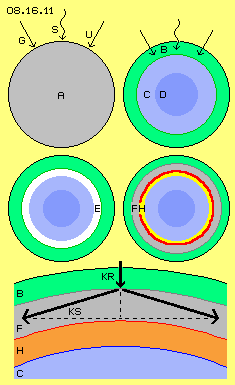
Als Konsequenz der größeren Ordnung materieller Partikel in diesem ´kristallinen Ätherbereich´ ergibt sich höhere Dichte. Das Gesteins-Gemenge der Lithosphäre (bis 400 km Tiefe) erfährt in der Übergangszone (bis etwa 600 km Tiefe) einen ´Phasenübergang´ (den die Wissenschaft derzeit nicht erklären kann). Die vorige ´lose Ansammlung von Staub´ beansprucht dort weniger Raum - nicht weil die Materie zusammen gedrückt würde, sondern nur weil der dortige Äther von hektischer Strahlung bereinigt ist. Der Äther zwischen den Atomen zittert nicht mehr so heftig, so dass die Partikel näher zusammen rücken können. Zusammen mit dem synchron zueinander schwingenden Äther bilden sie nun kompaktere Einheiten.
In kristalliner Form (hellblau) beansprucht die Materie nun weniger Raum als in der heterogenen Zone der Erdkruste bzw. des oberen Mantels (grün). Es ergibt sich praktisch ´leerer Raum´ (schematisch als weißer Ring E dargestellt) bzw. in diesem Bereich ist selbstverständlich noch immer Äther vorhanden, nur die materiellen Wirbelkomplexe sind zusammen gerückt. In diesen wirbelfreien Raum könnten nun die äußeren Schichten nachrücken und der ganze Himmelskörper auf einen geringeren Umfang zusammen sacken.
Dieser Prozess ist so, als würde nach dem Bau obiger schönen Steinbrücke das Baugerüst entfernt. Alle Steine rücken etwas nach unten, aber alle hindern sich gegenseitig. Erst damit erhält diese Konstruktion ihre Stabilität. Und als ´Neben-Effekt´ ergeben sich damit nun Scherkräfte bzw. ein enormer Druck dieser Steine in seitlicher Richtung zueinander. Jedes auf der Brücke lastende Gewicht wird nun nicht mehr von einem vertikalen Gegendruck getragen, vielmehr bewirkt diese Last nun ein Vielfaches an seitlichem Druck dieses Gewölbes.
Analog dazu verhält es sich nun bei der Erde (siehe Ausschnitt unten im Bild): die nachrückenden Gesteinsschichten (B, grün) bilden ein riesiges Gewölbe (F, grau) über der ´relativen Leere´ (H, hier rot markiert), welche sich aus der hohen Dichte des darunter befindlichen kristallinen Gesteins (C, hellblau) ergab. Das Gewölbe bildet praktisch eine Sperrschicht, die radial einwärts gerichteten Kräfte (Pfeil KR) ergeben enormen Druck in seitlicher Richtung (Pfeil KS), je flacher die Krümmung ist, desto stärker ist der seitliche Druck im ´Gewölbe´.
Viele Forscher unterstellen einen (mehr-) schichtigen Aufbau der Himmelskörper, hier aus Sicht des Äthers ergibt sich sogar die Notwendigkeit eines ´Erd-Gewölbes´. Real wird diese Sperrschicht natürlich keine geometrisch exakte Kugel-Sphäre bilden, sondern lokale Flächen unterschiedlicher Form, Neigung und Mächtigkeit, somit diverse Platten und Bruchstellen bilden.
Statischer Druck und Hitze
Die ganze Masse hoher Türme lastet auf deren Fundament - aber das Material ganz oben oder ganz unten weist gleiche Temperatur auf. Die gleiche Situation ergibt sich bei der Erde: der Auslöser des Drucks auf dem Gewölbe sind zwar die Dynamik der äußeren Strahlung und des von außen anliegenden generellen Ätherdrucks. Aber es ist rein statischer Druck, welcher das Gewölbe belastet und stabil hält. Die hohe Temperatur bis zum Schmelzpunkt des Gesteins unterhalb dieser ´Steinbrücke´ ergibt sich erst aus anderen Gesichtspunkten, z.B. in Analogie zur Verdunstung von Wasser.
An der Wasseroberfläche bildet der Äther eine gemeinsame Aura bzw. eine Membrane, die Oberflächen-Spannung genannt wird (die wiederum aufgrund vermeintlicher Anziehungskräfte erklärt wird). Obwohl Wassermoleküle einen Verbund bilden, zittern alle Partikel noch immer permanent. Sie stoßen zusammen und tauschen die Richtung und Geschwindigkeit ihrer Bewegungen aus. Es kollidieren nicht immer nur zwei Partikel, sondern gelegentlich auch mehrere zugleich (was ich Mehrfach-Kollision nenne). Wenn dabei auf einen Partikel gemeinsam die Bewegungsenergie übertragen wird, kann dieser Partikel aus der Wasseroberfläche heraus katapultiert werden. Dieser Wasserdampf weist somit hohe Geschwindigkeit bzw. Temperatur auf, während im Wasser die energie-abgebenden Partikel relativ energielos zurück bleiben (was die Verdunstungskälte ergibt).
Auch die Partikel des Gesteins zittern trotz des enormen Drucks in der Sperrschicht. Wenn es an der ´unteren Grenzfläche´ zu vorigen Mehrfach-Kollisionen kommt, werden Partikel in den ´Freiraum´ unterhalb hinaus katapultiert. Diese Partikel fehlen nun im Gestein als Kollisionspartner, d.h. auch dort kommt nun ein kleiner Bereich relativer Leere auf. In diesen werden aufgrund des hohen Drucks benachbarte Partikel hinein geschossen. In das bislang ´ruhende´ Gestein kommt nun Bewegung, d.h. der bislang rein statische Druck wird in kinetische Energie transferiert, d.h. es ergibt sich Wärme im Gestein.
Wärme wandert immer in Richtung der Kälte. Weil nach innen überall die gleiche - relativ mäßige - Temperatur besteht, steigt die Wärme im Gestein aufwärts (bei 14 km Tiefe wurden z.B. diese 300 Grad gemessen). Darum ist der Boden an der Oberfläche warm und nur darum strahlt die Erde mehr Wärme ab als sie von der Sonne erhält. Obwohl das ein Faktum ist, ´riecht´ es nach Perpetuum Mobile. Aber außer der Strahlung stellt ja auch der von außen einwirkende generelle Ätherdruck einen ständigen Energie-Input dar. Im wesentlichen aber resultiert dieser Energie-Export aus der Hebelwirkung in diesem Gewölbe: der gegebene Außendruck wird vielfach multipliziert in Form von Scherkräften und diese sind eine praktisch unerschöpfliche Energie-Quelle.
Gase, Hitze und Blasen
Beim vorigen Absprengen eines Partikels aus dem Gestein entsteht eine Lücke, in welche Nachbar-Partikel hinein gepresst werden - von allen Seiten zugleich. Dieser Prozess ist identisch zur ´Lumineszenz´ in Wasser bei starken Druckschwankungen. Im Gestein jedoch kann sich die Spannung nicht auflösen durch davon eilende Strahlung. Die Energie der sich entladenden Druckspannung bleibt vielmehr im Bereich dieser ´Blase gefangen´.
Unter diesen lokalen Bedingungen wird durchaus ein Molekül zerrissen, wobei z.B. Sauerstoff (das häufigste Element der Erde, vorwiegend gebunden im Gestein) frei gesetzt wird. Bei starker Deformation eines Atoms kann durchaus ein ´Wirbel-Auge´ (siehe Kapitel zum Aufbau der Atome) heraus ´gequetscht´ werden. Das sind asymmetrische ´Doppelkurbeln´ (wie in obigem Bild 08.16.07 links skizziert), welche der umgebende Äther sofort um eine adäquate Aura ergänzt - womit ein neues Wasserstoffatom generiert wird. H und O können sich zu H2O verbinden. Es werden sich in jedem Fall H2-Moleküle bilden. Unter diesen extremen Bedingungen können diese Doppelkurbeln über Kreuz so hart zusammen schlagen, dass sie ein Kohlenstoffatom ergeben. Es werden sich Kohlenwasserstoffe bilden. Die Anwesenheit dieser Elemente und Moleküle senkt den Schmelzpunkt des Gesteins entscheidend.
Information, Resonanz und Emergenz
Vielen Lesern wird die ´spontane´ Bildung neuer chemischer Elemente unglaublich erscheinen, aber dort unten herrschen spezielle Bedingungen. Viele gehen mit dem abstrakten Begriff ´Information´ lässig um, aber hier wird Information ein realer Vorgang: Durch extreme Bedingungen und extremen Zufall wurde ein C generiert. Die Bewegungsstruktur dieses Atoms ist Träger der Information ´hier ist ein C´. Auch der Äther in seiner Umgebung weist analoge Bewegung auf und repräsentiert die Information ´hier ist der Raum von / für C´. Wenn aus dem Gestein neue Wirbelfetzen heraus gequetscht werden, passen sie sich ein und ergänzen sich in dieser ´Negativ-Form´ des C-Atoms.
Es ist ein Faktum, dass z.B. die Information ´Sauerstoff´ auf eine Probe aufzuprägen ist und wenn diese Probe in einen ´toten´ Teich gelegt wird, weist dieses Wasser nach einiger Zeit tatsächlich mehr realen Sauerstoff auf. Es sei erinnert an das ´Potenzieren´ der Homöopathie oder auch an das Wachstum von Kristallen in Drusen (siehe dazu auch voriges Kapitel). Es gibt ganz real die Tendenz zur Selbstorganisation in der Natur - und diese ´Emergenz´ basiert auf realen Bewegungsmustern des realen Äthers zwischen realen Atom-Ätherwirbeln, was man auch - so man will - als reale Information bezeichnen könnte.
Zur Erklärung von Phänomenen wird vielfach auch der Begriff ´Resonanz´ benutzt, meist in sehr abstrakter Bedeutung. Resonanz bedarf aber eines realen Mediums - und gerade der lückenlose Äther ist dafür prädestiniert (weil ohnehin alle Bewegungen weitgehend synchron zueinander verlaufen müssen). Auf und über der Erd-Oberfläche ist der Äther voller Schwingungen der natürlichen Strahlung und des künstlichen ´Smogs des technischen Fortschritts´. Im Vergleich dazu herrscht in der Lithosphäre ´totale Ruhe´. Wenn dort unten zufällig obiges C-Atom zustande kam, erfüllt bzw. dominiert dessen Schwingen den umgebenden Äther. Sobald irgendwelche Ansätze ähnlichen Schwingens auftreten, werden diese in Resonanz kommen - unvergleichlich stärker also es hier oben im ´lärm-gestressten´ Äther möglich wäre. Auch aus dieser Sicht ist also durchaus realistisch, dass dort unten große Mengen chemischer Elemente generiert werden, besonders die ´schönen bzw. klaren´ Bewegungsmuster von H, C und O (siehe auch hierzu voriges Kapitel zum ´Äther-Modell der Atome´).
Wie oben angeführt wurde, könnten drei H2 so hart zusammentreffen, dass sie sich zu einem C ´verkeilen´. Es müssen aber nicht immer ´rohe Kräfte walten´: wenn das Äther-Umfeld stimmt, fügen sich die Wirbel zu neuen Atomen oder auch Molekülen in einem sanften Prozess. In einem geeigneten Milieu findet ´calm-fusion´ statt, wie ich diese Verwandlungen oben nannte. Das sind Ergebnisse eines (realen) Äther-Hintergrundes, die man üblicherweise dem Vorhandensein (abstrakter) Information, Resonanz oder Emergenz zuschreibt. Dort unten finden diese Vorgänge praktisch in ´Rein-Kultur´ statt, darüber hinaus in analoger Weise oder in übertragenem Sinne auch in vielen anderen Sachgebieten - eben so wie es der universellen Bedeutung des Äthers entspricht.
Ventil, Schmelze und Einbrüche
Es ´knistert´ also im Gewölbe dieser Übergangszone, aber es wird keine durchgängige Grenzfläche geben. Die Prozesse werden vielmehr an unterschiedlichen Orten mehr oder weniger große Kammern schnell fliegender Partikel, also Gas-Blasen großer Hitze bilden. An deren Rändern wird zumindest teilweise auch das Gestein geschmolzen sein oder eine zähflüssige Substanz bilden. In diesen Glut-Kammern bewegen sich alle Moleküle sehr schnell, besteht also Hitze und hoher Druck, der natürlich nach außen drängt.
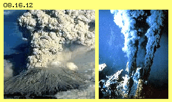
Das Ergebnis ist bekannt und eindrucksvoll, indem Vulkane glühende Steinbrocken hinaus schleudern und Lava-Ströme die Abhänge hinunter fließen. Weniger bekannt ist, dass weit mehr Materie in Form von Methan- und anderen Gasen sowie als Wasserdampf ausgestoßen wird (siehe Bild 08.16.12 links). Diese gewaltigen Mengen können nicht von der Erdoberfläche stammen, sondern müssen dort unten entstanden sein, so dass oben geschilderte Prozesse durchaus realistisch sind.
Beim Ausbruch eines Vulkans fließen die Gase durch enge Spalten und dort ergibt sich Beschleunigung durch den Düsen-Effekt. In den Engstellen gibt es eine Häufung von Mehrfach-Kollisionen mit ihrer Differenzierung der molekularen Geschwindigkeiten und die Strömungen werden auf Überschall-Geschwindigkeit beschleunigt (Details zum Effekt der ´Laval-Düsen´ sind in Kapitel 06.03. ´Überschall-Motor´ beschrieben). Durch die Freisetzung kinetischer Energie wird nun der Schmelzpunkt des Gesteins (bzw. dieses Gemenges aus Gasen und Festkörpern) überschritten und zu Lava verflüssigt.
Damit fließt Materie aus dem Erdinnern nach außen ab und der aufgestaute Druck wird schlagartig entlastet, zumindest im Umfeld des Vulkans. Dort könnte also das vorige Gewölbe tatsächlich einstürzen oder zumindest teilweise einbrechen. Bei einem solchen Vorgang könnte z.B. aber auch die massive Platte des Stillen Ozeans insgesamt abgesunken und zugleich die südamerikanische Platte gekippt sein. Die Anden wurden ´schlagartig´ um Kilometer aufgetürmt, so dass der Amazonas nun ´rückwärts´ fließt. Umgekehrt könnte z.B. der Boden des Atlantiks auf ganzer Länge aufgebrochen sein, wonach nun fortwährend Magma austritt und die Kontinente auseinander driften (siehe ´black smokers´ rechts im Bild).
Fliehkraft und Hohle Erde
Natürlich können das nur spekulative Vermutungen sein, weil keine präzisen Daten der Erd-Geschichte wie vom Erd-Innern bekannt sein können. Aber selbst bei konventionellem Verständnis der Gravitation als Anziehungskraft zwischen Massen gibt es ein Problem bzw. spricht einiges für eine ´hohle Erde´. Viele Forscher vermuten, dass alle Himmelskörper in Schichten aufgebaut sind - aus gutem Grund. Die Masse im Erdmittelpunkt würde per (konventioneller) Gravitation nach allen Seiten auswärts gezogen, hätte somit ´kein Gewicht´ bzw. würde nur geringe Dichte aufweisen. Die höchste Dichte müsste sich in einem Ring bzw. einer Schale ergeben (im Bereich um etwa 2000 km Tiefe), weil dorthin die Massen von außen und von innen gezogen werden bzw. innerhalb dieses Rings in tangentialer Richtung die größte Anziehung bestünde.
Nach obigen Überlegungen zur Beschaffenheit und Wirkung des Freien Äthers ergibt sich diese Sperrschicht schon in der Übergangszone im Bereich um 600 km Tiefe. Spätestens dort enden alle äußeren Einwirkungen, sowohl der Strahlung als auch des universellen Ätherdrucks (wie auch der Gravitation, siehe unten). Die Massen unterhalb dieser Grenze werden nicht länger einwärts gedrückt - sondern drücken auswärts, basierend auf der ganz normalen Fliehkraft.
Jeder Ätherwirbel will geradewegs weiter wandern im Raum und diese Trägheit gilt universal. Nur eine schlagende Bewegung des Freien Äthers kann ihn von dieser Bahn abbringen, so wie z.B. die Planeten im Äther der Ekliptik driften. Dieser Bewegung um die Sonne unterliegen auch alle Atome im Erdinnern, aber zudem rotieren sie um den Erdmittelpunkt (vorwärts getrieben durch den Äther-Wirbel der Erde, siehe nächstes Kapitel). Sie drängen nach außen - und anstelle eines schweren Erdkerns existiert dort mit großer Wahrscheinlichkeit eine Leere, also überhaupt keine Materie.
Fliehkraft existiert auch an der Erdoberfläche, aber sie ist viel geringer als der von außen wirkenden Andruck. Nach innen werden diese Kräfte immer geringer, dennoch wird die Fliehkraft der inneren Massen weitgehend kompensiert. Aber für ein graduelles Wachstum des Erdumfangs (wie inzwischen wohl zuverlässig festgestellt wurde) kann dieser sanfte Druck aus dem Erdinnern sehr wohl Ursache sein. Im Gegensatz zu anderen Hypothesen wird dabei keine Neubildung von Materie z.B. via Neutrinos erforderlich, nur die zentrale Leere weitet sich aus.
Bereich der Gravitation
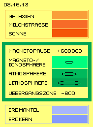
Nachdem bei allen vorigen Betrachtungen keine Anziehungskräfte im Spiel waren stellt sich die Frage, wie und wo Gravitation tatsächlich wirkt. Antwort: im grünen Bereich bzw. nur in den in Bild 08.16.08 grün markierten Sphären, hier in Bild 08.16.13 noch einmal hervor gehoben.
Gravitations-Wirkung beginnt bei der Magnetopause, die in eine Höhe bis zu 600 000 km reicht, auf der Sonnenseite aber bis auf 60 000 km herunter gedrückt ist (oder bei extremem Sonnensturm kurzfristig auch noch tiefer). Gravitation tritt auf in der Ionosphäre (wo die Höhe größter ´Ladungsdichte´ ebenfalls Schwankungen unterliegt). Abwärts-Schub gibt es auch in der Atmosphäre (mit ihrer zur Erde hin zunehmenden Dichte an Gas-Partikeln). Auch in der Erdkruste gibt es im Bereich des ´heterogenen Äthers´ noch diesen äußeren Einfluss. Schwerkraft-Wirkung endet aber spätestens bei 600 km Tiefe in der Übergangszone.
Außerhalb der Magnetosphäre (rote Bereiche) ist der Äther sehr unruhig, besonders durch den Sonnenwind. Durch Überlagerung aller Strahlungen bewegt sich der Äther ´chaotisch´ auf engen Bahnen. Unterhalb der Lithosphäre sind die Bewegungsmuster innerhalb der Atome und in ihren Zwischenräumen so angeglichen, dass kein radial-einwärts gerichteter Gravitations-Schub mehr existiert. Zwischen diesen beiden Begrenzungen, auf dem schmalen Band von wenigen tausend Kilometern, ändert sich die Struktur des Freien Äthers kontinuierlich. Durch die Filter-Funktion der Magneto- und Ionosphäre wird der Äther ruhiger (weil befreit von harter Strahlung). In der Atmosphäre bereits wird der Freie Äther ´grobkörniger´, weil er graduell das weite Schwingen materieller Partikel annimmt.
Das setzt sich fort in der Erdkruste bzw. verliert der Freie Äther in den massiven Ansammlungen des ´Grobstofflichen´ mehr und mehr seine ´Feinstofflichkeit´. Diese Anpassung wirkt nun sogar in umgekehrter Richtung: das weiträumige Schwingen des Äthers in tieferen Gesteinsschichten überträgt sich auch auf den Freien Äther an der Erdoberfläche und sogar in die Atmosphäre, so dass dort der Äther auf größeren Bahnen schwingt, als die lose Ansammlung von Gaspartikeln bewirken könnte.
Gravitations-Schub
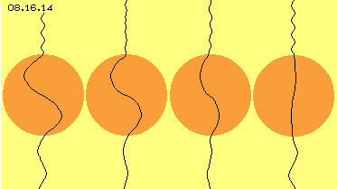
Gleichförmiger Äther übt den neutralen, universellen Ätherdruck aus. Sobald Freier Äther eine schlagende Bewegungskomponente aufweist, bewirkt er Schub auf alle Wirbelkomplexe. Hier in diesem Gravitations-Bereich weist der Freie Äther von außen nach innen zunehmend weiträumigere Bewegungen auf. Oberhalb eines Atoms ist der Äther eng schwingend und übt entsprechenden Druck auf die Oberseite des Atoms aus. Unterhalb ist der Äther etwas weiter schwingend, also etwas mehr entsprechend zum weiträumigen Schwingen der Atome. Dieser ´gröbere´ Äther bewirkt geringeren Druck auf die Unterseite der Atome.
Die Differenz ergibt den radialen Schub der Gravitation. Die Struktur des Freien Äthers ändert sich nur marginal, zur Erde hin jedoch zunehmend. Daraus ergibt sich die relativ schwache Kraft der Gravitation, die an der Erdoberfläche maximal ist, mit zunehmender Höhe schwächer wird und über der Magnetosphäre kaum mehr wahrnehmbar ist. Die graduellen Änderungen der Äther-Struktur setzt sich in die Erdkruste hinein fort, wird mit zunehmender Tiefe aber geringen bis zur Übergangszone. Dieser Gradient ist aber nicht mehr gegeben im Bereich mit ausschließlich kristallinem Gestein bzw. plasmatischem Gemenge.
In Bild 08.16.14 ist diese Situation skizziert, wobei die Größenverhältnisse extrem überzeichnet sind. Die gekrümmten schwarzen Linien stellen vertikale Verbindungslinien benachbarter Ätherpunkte dar. Die roten Scheiben repräsentieren Atome mit einer weiträumig schwingenden ´Doppelkurbel´. Wenn die Amplitude hier z.B. 2 cm ist, so wäre der Durchmesser des Atoms mindestens 200 m. Oberhalb des Atoms ist Freier Äther relativ eng schwingend, unterhalb des Atoms ist er graduell etwas weiter schwingend (hier wieder extrem differenziert).
Das enge Schwingen an der Oberseite ´rüttelt´ an der Aura des Atoms sehr stark und drückt es nach unten. Das weitere Schwingen an der Unterseite geht mehr konform zum Schwingen des Atoms und die weicheren Übergänge drücken weniger stark von unten gegen die Aura des Atoms. In diesem Bild sind vier Phasen des differenzierten Schwingens oberhalb, innerhalb und unterhalb eines Atoms dargestellt. In der Animation wird die ganze Bewegung sichtbar - wenngleich noch immer extrem überzeichnet.
Dieser Prozess ist Ursache und Wirkung der Gravitation, die nur wirksam ist im Nahbereich der Erde und analog dazu bei anderen Himmelskörpern. Gravitation ist aber keine universum-weit wirkende Kraft und sie ist keinesfalls eine konstante Kraft. Sie wirkt hier auf der Erde mit geringerer Stärke bei zunehmender Höhe, aber sie endet schon an der ´Grenze ihrer Aura´. Gravitation ist nicht abhängig von der Masse eines Himmelskörpers, sondern von der Struktur in seiner näheren Umgebung (Vorhandensein eines Magnetfeldes, einer Ionen- oder Atmosphäre) und seinem inneren Aufbau (z.B. fester oder nur gasförmiger Schichten).
Differenzierte Gravitation
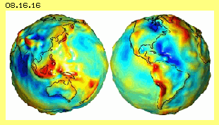
So ist auch die Schwerkraft der Erde nicht gleichförmig, vielmehr gibt es Gebiete mit geringerer oder stärkerer ´Erdanziehungskraft´. Mit aufwändigen Verfahren, hoch-empfindlichen Geräten und großem Rechenaufwand ergibt sich ein ´Geoid´, wie z.B. in Bild 08.16.16 dargestellt ist. Dieser weist gegenüber der ´Normal-Form´ der Erdoberfläche diverse Erhebungen (rot) und Absenkungen (blau) bis zu etwa 120 m auf.
Dabei wird unterstellt, dass die Stärke der Gravitation in Relation zur Entfernung vom Erdmittelpunkt steht. Die gemessenen Differenzen werden umgerechnet in entsprechende Höhe gegenüber ´Normal-Null´ bzw. dem Ideal-Ellipsoid. Im wesentlichen werden diese Abweichungen von bis zu 0.02 Promille zurück geführt auf unterschiedliche Masse-Anhäufung im Erdaufbau. Man kennt sehr wohl auch andere Einflussfaktoren, aber dennoch bleiben viele Fragen offen. Diese versucht man natürlich mit verbesserter Technik aufzuklären - hat aber keinen Zweifel an der generellen Definition von Gravitation und deren Abhängigkeit von Masse und Radius.
Variable Schwerkraft
Wenn dem tatsächlich so wäre, dann dürfte es keine hundertfach höhere Schwankung der Schwerkraft an einem Ort während des Tagesablaufes geben, also im Bereich ganzer Promille. In Bild 08.16.17 gebe ich eine Graphik wieder, die mir Dr. Dietrich Schuster (ein befreundeter Kollege und herausragender Naturwissenschaftler, leider verstorben) zur Verfügung stellte. Als Chemiker hatte er Erfahrung im Umgang mit hoch-empfindlichen Waagen und natürlich für die Planung und Umsetzung von Experimenten.
Er baute mehrere Zylinder aus Lagen kristallinen Gesteins und Kupfergittern, als Rotor frei drehbar gelagert und montiert auf einer Waage. Das Ganze war hermetisch abgeschlossen und alle Messwerte wurden elektronisch erfasst und ausgewertet. Nach einiger Zeit beginnt der Rotor selbsttätig zu drehen (gegen den Uhrzeigersinn) und sein Gewicht (von ca. 20 kg, abhängig vom eingesetzten Material) verringert sich um etwa sieben Gramm (siehe Startphase links im Bild). Während der Nacht wird der Rotor nochmals um etwa zwei Gramm leichter (grün markierte Fläche). Eine Stunde vor Sonnenaufgang (SA) wird die beobachtete Masse sehr schnell wieder schwerer (dunkelrot markiert) und nimmt zur Tagesmitte noch einmal an Gewicht zu (hellrot).
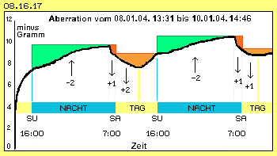
Am folgenden Tag wiederholt sich diese Aberration der Schwere analog. Schuster experimentierte mit Rotoren unterschiedlichen Materials, wobei dieser prinzipielle Prozess zu beobachten war (immer mit Abweichungen im Gramm-Bereich, also weit außerhalb der Fehlertoleranz). Noch stärkere Abweichungen ergaben sich bei einer Sonnenfinsternis. Selbst auf Gewitter bzw. die aktuelle Atmosphäre reagierten die Messwerte (z.B. weil die Rotoren auf ´Orgon´ ansprachen). Schuster zeigte auf Veranstaltungen aber auch ganz einfache Experimente, wo z.B. ganz normale Messbecher aus Glas deutliche Abweichungen ihres Gewichtes zeigten durch einen elektrostatisch aufgeladenen Ring (ohne direkte Berührung).
Auch obige Graphik lässt sich einfach erklären durch ´elektrostatischen´ Einfluss bzw. dessen realem Ätherhintergrund: während der Nacht ist die Erde abgeschirmt vor harter Strahlung der Sonne. Das weiträumige Schwingen der Atome bzw. des Äthers zwischen den Atomen kann sich in die Atmosphäre und Ionosphäre weiter ausdehnen. Nahe an der Erdoberfläche sind damit die Gradienten geringer, d.h. die Masse wird leichter (in Bild 08.16.14 eine kleinere Differenz oberhalb und unterhalb des dortigen Atoms). Kurz vor Sonnenaufgang trifft die Sonnenstrahlung bereits in die Ionosphäre, der Äther dort wird ´hektischer´, d.h. die Schwingungs-Differenz wird herunter gedrückt und der erhöhte Gradient ergibt messbar höheres Gewicht. Bei höher stehender Sonne wird die ´Unruhe´ im Äther weiter nach unten gedrückt. Erst bei schrägem Einfall der Sonnenstrahlung tritt wieder Beruhigung ein und der Übergang vom weiten zum engen Schwingen des Äthers verlagert sich weiter nach außen.
Gewiss hat die unterschiedliche Ansammlung von Gesteinsmasse einen Einfluss auf obigen ´Geoid´. Aber es ist nicht die Masse an sich, sondern die ´Ruhe bzw. Unruhe´ im Untergrund ist von Bedeutung - dennoch hat das aktuelle Umfeld der Erde größeren Einfluss. Noch gravierender ist der Unterschied in Abhängigkeit davon, ob ein Himmelskörper aus fester oder gasförmiger Materie besteht, eine Atmosphäre und/oder ein Magnetfeld besitzt. Die Gravitation ist also für jeden Himmelskörper individuell.
Individuelle Gravitation
In Bild 08.16.18 sind prinzipielle Varianten der Gravitation bei unterschiedlichen Himmelskörpern skizziert. Bei A ist zunächst die konventionelle Sicht zur Gravitation (G) dargestellt. Maßgebend soll dabei die Masse des Himmelskörpers sein und umgekehrt-proportional zum Radius nimmt deren Wirkung ab (siehe Kurve über der roten Fläche). Theoretisch reicht diese Gravitation unendlich weit und tatsächlich wird mit dieser ´universellen Konstanten´ bis zum Urknall bzw. Ende des Universums gerechnet (ein Unding an sich). Die Masse wird dabei punktförmig gedacht, aber schon bei dieser Sicht von ´Anziehungskraft´ ist die Materie im Zentrum ´gewichtslos´, d.h. die Schwerkraft geht zum Mittelpunkt gegen null.
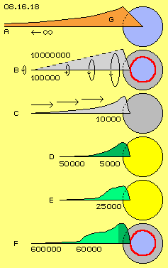
Bei B ist die oben diskutierte Ursache der Gravitations-Wirkung skizziert. Der Freie Äther zwischen Atomen nimmt graduell das weite Schwingen des Gebundenen Äthers an, also der ´materiellen´ Wirbelkomplexe. Von der Erdkruste einwärts stimmen alle Bewegungen zunehmend überein, so dass es innerhalb der Übergangszone (roter Ring) gar keine Schwerkraft gibt. Nach außen breitet sich das weite Ätherschwingen aus, allerdings in jeweils reduziertem Umfang (repräsentiert durch die Pfeil-Ringe). In wirklich neutralem Freien Äther (links) könnte eine solche ´Aura´ zehn Millionen Kilometer hinaus reichen (um vorigem Unendlich eine Zahl entgegen zu setzen, wobei z.B. zwischen Erde und Nachbar-Planeten noch genügend Zwischenraum bliebe). Ziemlich sicher wird das Wirbelsystem der Erde eine Million Kilometer hinaus reichen (siehe unten). Wenigstens 100 000 km weit müsste also eine Materie-Ansammlung ´zu riechen´ sein - anhand etwas erweitertem Schwingen im neutralen Äther.
Nackter Mond
Diese Beeinflussung geht von der Oberfläche aus, egal wie flach oder rund diese ist und damit egal welche ´Masse´ dahinter steht, diese ´Ausstrahlung´ ist also gleichermaßen z.B. für Erde und Mond. Allerdings ist der Mond ohne Magnetfeld und ohne Atmosphäre, so dass harte Strahlung mit ihrer hektischen Bewegung das weite Schwingen weit zurück drängt. Diese Situation ist bei C durch die Pfeile repräsentiert, so dass die Gravitationswirkung (grau) auf ein enges Umfeld reduziert ist (siehe flache Kurve, die erst kurz vor der Oberfläche ansteigt).
Vermutlich setzt die wesentliche Schwerkraft erst bei 10 000 km ein. Beispielsweise werden Mond-Satelliten zuerst auf eine elliptische Bahn mit maximal 3000 km eingebremst. Die meisten Satelliten fliegen später auf Bahnen in 200 km Höhe und umrunden den Mond in etwa zwei Stunden mit rund 6000 km/h. Derzeit fliegt ein japanischer Satellit auf 50 km Höhe um den Mond. Bei Apollo-10 wurde die Mondlandung geprobt: die Kommandokapsel flog auf etwa 100 km Höhe und eine Mondlandefähre wurde abgesenkt bis vor den ´point of no return´ bei 14 km. Erst in so geringer Höhe erreicht die ´Anziehungskraft´ des Mondes größere Stärke.
Allerdings wird die Ausweitung des materiellen Schwingens durch Strahlung so sehr zurück gedrängt, dass selbst an der Mondoberfläche die Gravitation nur einen Bruchteil der irdischen Schwerkraft erreicht. Aufgrund dieser Überlegungen behaupte ich, dass die Gravitation des Mondes nach außen hin stärker abnimmt als umgekehrt-proportional zur Entfernung. Analoges gilt für andere feste Himmelskörper, die ohne schützende Hülle der Strahlung ausgesetzt sind. Egal wie groß oder klein diese sind, wird Gravitation nur im engen Umfeld auftreten und geringere Kraft aufweisen als unsere irdische Schwerkraft.
Schwere-arme Sterne und Gas-Planeten
Entgegen üblicher Ansicht haben die großen Gas-Planeten und Sterne noch geringere ´Anziehungskräfte´. Bei festen Planeten sitzen die Atome dicht beisammen, fünf mal geringere Dichte hat Wasser - aber noch tausend mal weiter sind die Räume zwischen Gaspartikeln. Diese sind einzelne Atome oder Moleküle mit nur wenigen Atomen und sie bilden auch keine großen Ansammlungen. Der Äther hat im Gas somit keine Veranlassung, die Bewegungsstruktur dieser Atome bzw. Partikel anzunehmen. Damit wird auch der Äther weiter außerhalb kaum ein wesentlich erweitertes Schwingen aufweisen. Wo es keinen Gradienten zwischen engem und weitem Schwingen gibt, gibt es auch keine Gravitation.
In diesem Bild bei D ist die Fernwirkung (grün) z.B. mit maximal 50 000 km Höhe über der Gas-Oberfläche angegeben, die Gravitation könnte aber auch erst ab 5000 km wirksam werden (z.B. bei Jupiter wie bei der Sonne). Nur wenn der Himmelskörper ein geordnetes Magnetfeld oder eine Atmosphäre hat, wird die äußere Strahlung heraus gefiltert und dort außen könnte dann Gravitationswirkung gegeben sein, z.B. bei 25 000 km wie bei E notiert ist (siehe Kurve über der grünen Fläche).
Mir ist natürlich bewusst, dass diese Aussage provokant bis völlig unglaubwürdig ist. Es bleibt jedem unbenommen, weiterhin an die Anziehungskraft der Massen zu glauben und dass nur dadurch die Planeten und Monde auf ihrer Bahn zu halten sind. Realiter schwimmen diese nur mit im Strudel der Ekliptik um die Sonne oder z.B. im ´Whirlpool des Erde-Ätherwirbels´. Es gibt eine klare Alternative von ´Bahn-Haltekräften´, die z.B. den Mond und Satelliten an die Erde ´binden´ (siehe nächstes Kapitel).
Irdische Gravitation
In diesem Bild 08.16.18 ist unten bei F noch einmal die zunehmende Kraft der irdischen Schwerkraft dargestellt. Das Magnetfeld wird auf der Nachtseite bis zu 600 000 km gestreckt, aber in diesem langen Schweif sind keine sauberen Gradienten hinsichtlich weitem und engem Ätherschwingen gegeben. Auf der Sonnenseite ist die Magnetopause auf 60 000 km komprimiert und erst in dieser Höhe wird im wesentlichen die irdische Schwerkraft einsetzen.
Es gibt aber keinen kontinuierlichen Anstieg der Kräfte, wie er sich nach gängiger Formel entsprechend zum Radius ergeben würde. Die Gradienten wandern vielmehr ein- und auswärts mit den Veränderungen in der Ionosphäre (hellgrün) und auch in der Atmosphäre (dunkelgrün, siehe auch obiges Beispiel der Aberration in Bild 08.16.17). Es wäre eine lohnende Aufgabe der Forschungseinrichtungen, die jeweilige Stärke der Schwerkraft in unterschiedlicher Höhe über einem Ort zu ermitteln in ihrem zeitlichen Verlauf, um das wahre Wesen der Gravitation erkennen zu können und diese Behauptungen zu bestätigen.
Die Schwerkraft wird ins Erdinnere (dunkelgrün) abnehmend sein und schon ab 600 km Tiefe keine Wirkung mehr haben. Diese von der gängigen Lehre abweichenden Erscheinungen wurden teilweise schon belegt. So ergaben z.B. Fallversuche, dass Masse weder gleichmäßig beschleunigt wird und auch nicht lotrecht hinunter fällt (sondern auf spiraliger Bahn, wie alle Bewegungen im Äther).
Meinungs-Umschwung und Einstein-Episode
So schwer es zu akzeptieren sein mag: es steht außer Zweifel, dass Gravitation nur eine Erscheinung im nahen Umfeld von Himmelskörpern ist. Jeder hat seine individuelle Schwerkraft mit spezifischer Reichweite und gradueller Abstufung. Die irdische Gravitation kann nicht übertragen werden über ihren Wirkungsbereich hinaus. Gravitation ist keine universelle und konstant wirkende Kraft. Alle Berechnungen mit der Gravitations-Konstante über diesen engen Raum hinaus sind absolut irreführend.
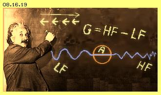
Viele Leser wissen, dass Gravitation nicht identisch sein kann mit der ihr zugeschriebenen ´Anziehung´. Die Astronomie hat größte Probleme mit ihren Berechnungen basierend auf konstanter Gravitation. Die Planeten bewegen sich nicht nach den ´vorgegebenen Gesetzen´, die Milchstrasse kann so nicht funktionieren und im Universum fehlt es an Masse oder muss ´Anti-Gravitation´ eingerechnet werden. Es muss etwas Generelles falsch sein am derzeitigen Verständnis von Schwerkraft. Aber ich fürchte, viele Leser werden meinen extremen Vorstellungen mental nicht folgen wollen, weil das Überkommene zu resistent ist. Darum ist es jammerschade, dass obige Einstein-Episode nicht der Wahrheit entspricht. Ihm hätte man geglaubt, selbst wenn er stark vereinfacht hätte:
" ... Der Äther im All ist hoch-frequent, in den Sphären der Erde wird die härteste Strahlung absorbiert und die Erde strahlt ohnehin nur nieder-frequent ab. Jedes Atom A an oder über der Erdoberfläche ist also einem Gradienten an Schwingungsdruck ausgesetzt. Die Gravitation G entspricht der Differenz von Hoch-Frequenz HF zu Nieder-Frequenz LF des um die Erde befindlichen Äthers ... ".
Zum experimentellen Nachweise hätte er ein Stahlseil quer durch den Hörsaal gespannt, auf dem ein Ball hin und her gleiten konnte. An beiden Enden durften Studenten rütteln und jeder konnte mühelos erfahren, wann und warum der Ball zu einer Seite hin verschoben wurde.
Keiner hätte Einstein glauben müssen, sondern hätte das Wesen der Gravitation selbstverständlich erkannt. Leider brachte Einstein den obigen Umkehr-Schluss nicht rechtzeitig zustande und hinterließ ein - bis heute - verwirrtes Auditorium. Sonst wäre die Geschichte der Physik und der Technik, möglicherweise auch der Gesellschaft, anders verlaufen. Schade um das verlorene Jahrhundert.